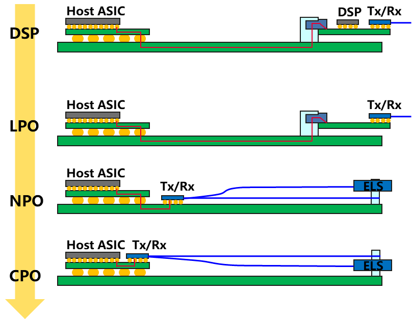
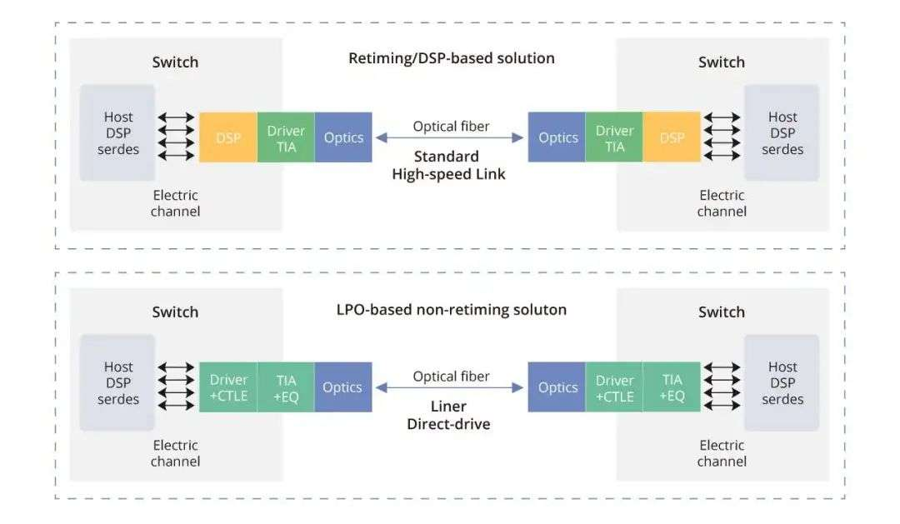
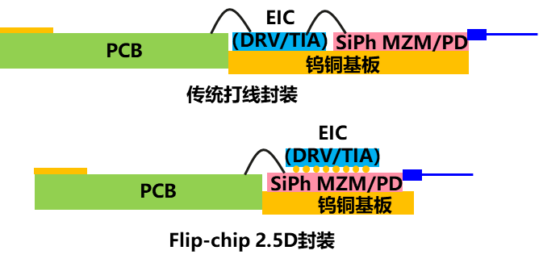
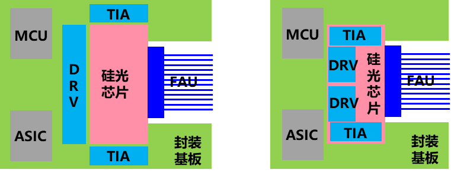
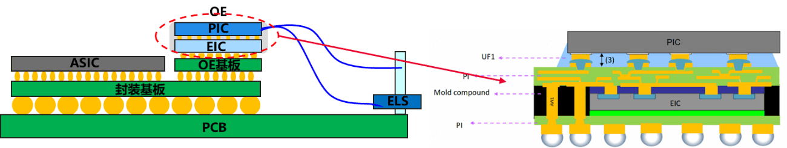
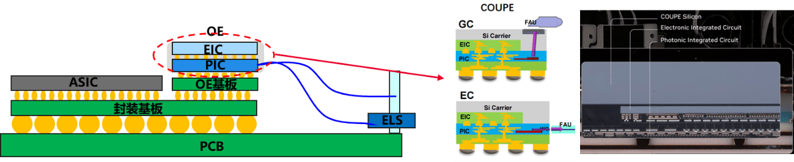
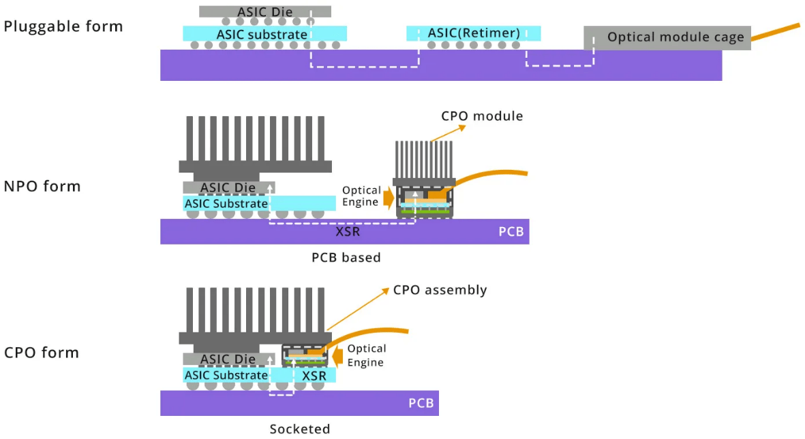

先进封装技术演进 ¶
LPO/CPO/NPO 封装技术 ¶
从传统的 2D 封装，到基于硅中介层的 2.5D/3D IC 封装，再到如今的光电协同封装，技术演进的核心逻辑是不断缩短互连距离、提升带宽密度、降低单位比特能耗。可插拔光模块（如 QSFP-DD）代表了光电分离的现状，而 LPO 是其改良，NPO/CPO 则是朝向光电深度融合的范式革命，体现了 " 封装即系统 " 的理念。

图 1: 封装技术演进路线图（从可插拔到 CPO）
在人工智能大模型训练和推理需求爆炸式增长的背景下，全球数据中心正经历从传统云架构向高性能计算集群（HPC）的深刻转型。随着 GPU 算力的指数级提升，网络互联带宽已成为制约系统效率的关键瓶颈。研究数据显示，在缺乏高效互联的情况下，高达 33% 的 GPU 时间可能因等待网络可用性而被浪费，这在算力成本极高的今天意味着巨大的经济损失。同时，随着端口速率持续向 800G、1.6T 容量演进，传统可插拔光模块面临着 " 功耗墙 " 与 " 信号完整性 " 的双重挑战。在这一背景下，线性直驱可插拔光学（LPO

图 2: 几种不同的光互连形态示意图
LPO/NPO/CPO 技术定位 ¶
三者并非简单的替代关系，而是面向不同场景、不同阶段的技术阶梯。LPO 聚焦对现有可插拔生态的 " 降功耗 " 改良；NPO 作为中间形态，平衡了集成度与可维护性；CPO 则代表终极形态，追求极致的能效与带宽密度。它们在集成度、功耗、成本、标准化和可维护性上构成连续光谱。
线性驱动可插拔光学（LPO）¶
LPO（Linear-drive Pluggable Optics）作为一种过渡性但极具市场潜力的技术方案，旨在通过剥离光模块内部的高功耗数字信号处理芯片（DSP）来解决当前的散热与能耗压力。在传统的重定时（Re-timed）可插拔模块中，数字信号处理器是不可或缺的核心单元，用于时钟恢复、色散补偿以及信号损伤修复。然而，随着速率提升至 800G，DSP 的功耗占比已接近模块总功耗的一半，成本约占光模块总成本的 1/3。
LPO 的核心革新在于移除了传统可插拔光模块中的高速数字信号处理器（DSP

图 2: LPO 与传统光模块架构对比
综合来看，LPO 模块在维持可热插拔的条件下可有效降低光互连功耗、成本与时延，能够高度契合 AI 计算中心短距离、大带宽、低功耗、低延时的需求。其最大优势是在基本保持可插拔形态和互换性的前提下，将光模块功耗降低约 50%，极具成本效益。
主要挑战在于：链路性能依赖于 ASIC 与模块的协同优化，对信道损伤的容忍度降低，可能影响互操作性；传输距离目前限于 500 米至 2 公里内的数据中心短距互连；产业亟需建立统一的线性接口标准。
封装形式 ¶
LPO 当前主要采用硅光器件平台，通过激光器分光共享进一步降低 BOM 成本。LPO 主要采用与 DSP 模块相同的封装方案，一般有两种封装形式：
- 打线（Wire Bonding）封装：EIC 与硅光芯片平铺在散热基板上，通过打线方式实现 PCB 到 EIC、再到硅光 PIC 的电互连；
- 倒装（Flip-chip）封装：EIC 通过金球或焊料面对面贴装在硅光芯片上，硅光芯片再通过打线方式或倒贴焊接方式与 PCB 连接。这种封装方式下信号路径经过金线连接次数明显减少，有利于提升信号链路带宽。

图 3: LPO 光模块两种典型的封装形式
LPO 是面向现有数据中心网络升级最直接的解决方案，尤其适用于 AI/ML 集群中 GPU/XPU 之间高速、短距的脊叶架构互连。它能够快速部署，缓解机架顶交换机面临的功耗和散热压力，是向更高集成度光电封装过渡前，最具商业可行性的 " 立即可用 " 技术。
近封装光学（NPO）¶
NPO（Near-packaged Optics）是一种介于传统可插拔光学与全集成 CPO 之间的中间形态。其核心出发点是在解决 " 信号完整性 " 问题的同时，规避 CPO 在封装复杂度、热管理及可靠性方面的风险。NPO 将光引擎从面板处的可插拔插槽移走，放置在交换机 PCB 主板上，并使其紧挨着 ASIC 芯片，通常距离控制在 1 至 5 厘米范围内。在这种形态下，光引擎通常采用模块化、可插拔或焊接的形式固定在主板上，并通过超短距离的电走线与 ASIC 连接。

图 4: NPO 技术架构图
NPO 在集成度与灵活性间取得了折中：相比可插拔，它提升了带宽密度并降低了功耗；相比 CPO，它降低了封装复杂度和热管理难度，维护更便捷。挑战在于：板级高速通道设计难度高；光学引擎与 ASIC 之间需要高密度、低损耗的连接器；整体系统的机械与散热设计更为复杂。
封装形式 ¶
NPO 模组一般有两种封装方式：
- MCM（Multi-chip module）2D 封装：电芯片与硅光芯片均贴装在封装基板上，通过封装基板实现电信号的高速互连；
- Flip-chip 2.5D 封装：与光模块的 2.5D 封装方式类似，可以进一步减小光模组尺寸，有效降低电链路插损。

图 5: NPO 光组件两种典型的封装形式
对于超大规模数据中心而言，NPO 提供了一个可以在较短时间内实现且风险可控的升级路径，无需依赖 TMV、TSV 等先进封装工艺，直接在传统光模块厂商进行最后组装。
NPO 适用于对带宽和能效有较高要求，但又需要一定模块化灵活性以适配不同距离或技术迭代的场景，如高端数据中心交换平台、以及特定规模的 AI 训练集群。它可被视为 CPO 全面成熟前的重要过渡方案，或是在某些对可维护性要求极高的场景中的长期选择。
共封装光学（CPO）¶
CPO（Co-packaged Optics）被公认为短距光互连演进的终极方案。它打破了电信号在 PCB 上传输的物理范式，将光电转换环节直接移入交换芯片或计算芯片的封装内部，实现了物理层面上光电转换与 ASIC 逻辑芯片的深度集成。
CPO 代表了最高集成度，它将多路光学引擎（通常基于硅光技术）与计算 ASIC 通过先进封装技术（如硅中介层、再布线层、微凸块）集成在同一封装基板或插槽内。电信号在封装内部以极短距离互连，直接转换为光信号射出。这种架构几乎消除了高速电信号在 PCB 上的传输，实现了芯片级的光电融合。
CPO 的系统级架构通常由核心电芯片、光引擎模块、硅中介层及外部激光器源（ELS）组成。通过硅光技术，将原本复杂的离散光器件集成到微小的芯片上，CPO 实现了传统形态无法企及的带宽密度。例如，Broadcom 的 Bailly 平台在单个封装内集成了 8 个 6.4T 光引擎，构建出总容量高达 51.2T 的交换能力。
CPO 能实现数量级的能效提升（目标低于 5 pJ/bit
挑战极为严峻：首先是热管理，高功耗 ASIC 与对温度敏感的光学元件紧密相邻，散热设计空前复杂；其次是测试与可靠性，封装后难以单独测试光电部件，良率提升和故障诊断困难；此外，供应链重构、标准缺失以及高昂的初期成本都是商业化道路上必须跨越的障碍。
封装技术路线 ¶
当前 CPO 主流封装技术路线主要有两种 3D 封装技术路线：
FOWLP（Fan-out Wafer-level Packaging）¶
以 Broadcom、Cisco 为代表。

图 6: 博通公司 6.4T OE 光引擎 FOWLP 封装结构
在该方案中，EIC 芯片嵌入在 molding 材料中，molding 材料中引入垂直互连结构 TMV（Through Molding Via
采用 EIC 内嵌的封装方式对于光引擎散热不太友好，新加坡 A*Star 也报道了 PIC 内嵌的 CPO OE 封装方案，整个工艺过程需要对光口进行保护，避免 molding 过程中有机材料污染光口，降低光口耦合性能。
COUPE（Compact Universal Photonic Engine）¶
以 Nvidia、TSMC 为代表。

图 7: TSMC 的 COUPE 光引擎封装方案结构及 Nvidia CPO 光引擎截面
与 FOWLP 方案相比，该方案同为 3D 封装结构，但采用了更为先进的 TSV（Through Silicon Via）结构。EIC 与 PIC 通过 Hybrid bonding 技术直接堆叠，避免焊球结构引入的寄生效应，大幅改善电互连链路带宽。另一方面，PIC 芯片集成 TSV 结构，电信号直接穿过 PIC 芯片与 EIC 互连，相比 TMV 的封装结构可减少 RDL 的走线长度，改善链路带宽。
在光耦合方面，可以选择端面耦合与面耦合方案。面耦合结构中，可以采用基于光栅的面耦合方式以及基于封装工艺的 90° 反射镜结构，由于在顶层硅载板层集成扩束透镜，配合光纤端面的 90° 反射镜可实现较高的耦合效率。
Nvidia 公司发布了 Quantum-X 以及 Spectrum-X 系列 CPO 交换机，主要采用 TSMC 的 COUPE 封装技术方案。

图 8: CPO 封装架构示意图
如图所示，CPO 技术通过将光学引擎与计算 ASIC 紧密集成，实现了芯片级的光电融合，极大地提升了互连密度和能效。
对参考设计的影响 ¶
对第四章的参考设计而言，封装技术演进决定的并不是“是否需要互连”，而是“互连该放在什么物理距离上、以什么功耗与维护代价实现”：
- 标准以太构型：LPO 会先作为最现实的降功耗与平滑升级路径，帮助传统以太交换方案继续向更高带宽演进。
- Dragonfly + OCS：NPO/CPO 的成熟会显著改善组间高带宽链路的能效和端口密度，使其在更大规模下更具吸引力。
- Torus + OCS / dOCS：如果共封装或近封装光学进一步降低链路能耗与封装外 I/O 压力，可重构低直径拓扑的工程门槛会随之下降。
因此，封装并不是第五章中与第四章平行的独立话题，而是会直接改变第四章各类方案在功耗、密度、维护性和成熟度上的排序。